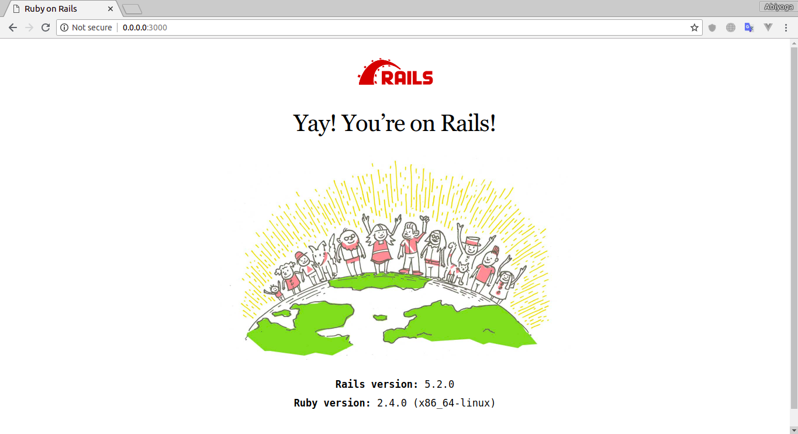
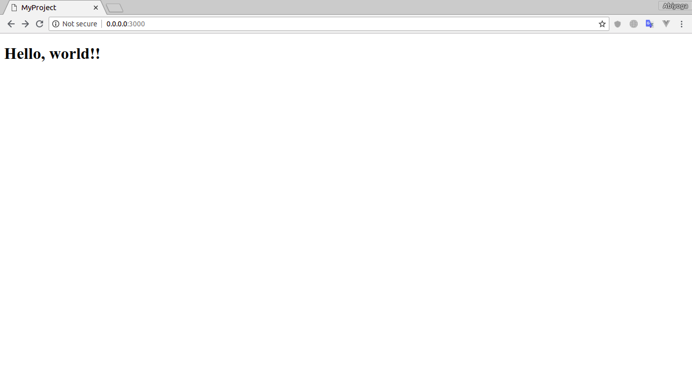

Ruby On Rails
Getting Started with Rails
First rails app
So the Rails is installed but how do we get start with Rails?. Well just run rails new my-project at the terminal and Rails will generate the application files and folders for us. And don't forget you can named the application whatever you want like rails new blog but in this case we gonna name it "my-project".
$ rails new my-project
After that your app will created. Let's move to your app directory and look what Rails have done.
$ cd my-project
$ ls -l
drwxrwxr-x 10 root root 4096 Agu 4 13:21 app
drwxr-xr-x 2 root root 4096 Agu 4 13:21 bin
drwxrwxr-x 5 root root 4096 Agu 4 13:21 config
-rw-rw-r-- 1 root root 130 Agu 4 13:21 config.ru
drwxrwxr-x 2 root root 4096 Agu 4 13:21 db
-rw-rw-r-- 1 root root 2205 Agu 4 13:21 Gemfile
-rw-rw-r-- 1 root root 5293 Agu 4 13:21 Gemfile.lock
drwxrwxr-x 4 root root 4096 Agu 4 13:21 lib
drwxrwxr-x 2 root root 4096 Agu 4 13:42 log
-rw-rw-r-- 1 root root 68 Agu 4 13:21 package.json
drwxrwxr-x 2 root root 4096 Agu 4 13:21 public
-rw-rw-r-- 1 root root 227 Agu 4 13:21 Rakefile
-rw-rw-r-- 1 root root 374 Agu 4 13:21 README.md
drwxrwxr-x 2 root root 4096 Agu 4 13:21 storage
drwxrwxr-x 9 root root 4096 Agu 4 13:21 test
drwxrwxr-x 6 root root 4096 Agu 4 13:42 tmp
drwxrwxr-x 2 root root 4096 Agu 4 13:21 vendor
Rails working directory
Let's take a look what the purpose of files and folders was created by Rails.
| File/Folder | Purpose |
|---|---|
| App/ | Contains the controllers, models, views, helpers, mailers, channels, jobs and assets for your application. You'll focus on this folder for the remainder of this guide. |
| bin/ | Contains the rails script that starts your app and can contain other scripts you use to setup, update, deploy or run your application. |
| config/ | Configure your application's routes, database, and more. |
| config.ru | Rack configuration for Rack based servers used to start the application. |
| db/ | Contains your current database schema, as well as the database migrations. |
| Gemfile and Gemfile.lock | These files allow you to specify what gem dependencies are needed for your Rails application. These files are used by the Bundler gem. |
| lib/ | Extended modules for your application. |
| log/ | Application log files. |
| package.json | This file allows you to specify what npm dependencies are needed for your Rails application. This file is used by Yarn. |
| public/ | The only folder seen by the world as-is. Contains static files and compiled assets. |
| Rakefile | This file locates and loads tasks that can be run from the command line. The task definitions are defined throughout the components of Rails. Rather than changing Rakefile, you should add your own tasks by adding files to the lib/tasks directory of your application. |
| README.md | This is a brief instruction manual for your application. You should edit this file to tell others what your application does, how to set it up, and so on. |
| test/ | Unit tests, fixtures, and other test apparatus. |
| tmp/ | Temporary files (like cache and pid files). |
| vendor/ | A place for all third-party code. In a typical Rails application this includes vendored gems. |
| .gitignore | This file tells git which files (or patterns) it should ignore. |
| .ruby-version | This file contains the default Ruby version. |
For now let's keep moving on by doing a basic "Hello world" in Rails.
Work around in Rails
As you can see we list the file and folder in working directory with ls -l command. Let's try to running the application with rails server command.
$ rails server
=> Booting Puma
=> Rails 5.2.0 application starting in development
=> Run `rails server -h` for more startup options
Puma starting in single mode...
* Version 3.12.0 (ruby 2.4.0-p0), codename: Llamas in Pajamas
* Min threads: 5, max threads: 5
* Environment: development
* Listening on tcp://0.0.0.0:3000
Use Ctrl-C to stop
Open your browser and navigate to http://0.0.0.0:3000. You should see the Rails default page.

Now your web app is ready. But Rails is running with single static page and a default image. Let's do a basic "hello world" in Rails app.
"Hello World" on Rails
To say "Hello world" with Rails you need to create at least a controller and a view.
A controller's purpose is to receive specific requests for the application. Routing decides which controller receives which requests. And you can say a controller's is the place where application logic and algorithm is working. Often, there is more than one route to each controller, and different routes can be served by different actions. Each action's purpose is to collect information to provide it to a view.
A view as you read is to display the information in a human readable format. The view should just display the information that come from controller. By default, view templates are written in eRuby (Embedded Ruby) which is processed by the request cycle in Rails before being sent to the user.
To create a new controller, you will need to run the "controller" generator and tell it you want a controller called "welcome" with an action called "index".
bin/rails generate controller welcome index
And Rails will create several files and a route for you.
create app/controllers/welcome_controller.rb
route get 'welcome/index'
invoke erb
create app/views/welcome
create app/views/welcome/index.html.erb
invoke test_unit
create test/controllers/welcome_controller_test.rb
invoke helper
create app/helpers/welcome_helper.rb
invoke test_unit
invoke assets
invoke coffee
create app/assets/javascripts/welcome.coffee
invoke scss
create app/assets/stylesheets/welcome.scss
The controller is located at app/controllers/welcome_controller.rb and the view is located at app/views/welcome/index.html.erb.
Open the app/views/welcome/index.html.erb file in your text editor. Delete all of the existing code and replace it with single line of "hello world" code.
<h1>Hello, world!!</h1>
Setting the application home page
Now that we made the controller and view. Next we need to tell Rails when we want "Hello world", to show up. In this case, we want it to show up when we navigate to the root URL of our site, http://0.0.0.0:3000. To do that, open the file config/routes.rb in your editor.
Rails.application.routes.draw do
get 'welcome/index'
# For details on the DSL available within this file, see http://guides.rubyonrails.org/routing.html
end
This is your application's routing files. The routes file is hold entries in a special DSL domain-specific language that tells Rails how to connect incoming requests to controllers and actions. Now edit this file as below.
Rails.application.routes.draw do
get 'welcome/index'
root 'welcome#index'
end
root 'welcome#index' tells Rails to map requests to the root of the application to the welcome controller's index action and get 'welcome/index' tells Rails to map requests to http://0.0.0.0:3000/welcome/index to the welcome controller's index action. This was created earlier when you ran the controller generator.
Now refresh the page and you'll see the "hello world!!" message you put into app/views/welcome/index.html.erb.
